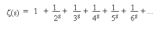

Georg Friedrich Bernhard Riemann
Sehr früh war Riemann von den Primzahlen und ihren Eigenschaften fasziniert.
Die sogenannte 'Riemannsche Vermutung' ist auch für die heutigen Mathematiker noch eines der ungelösten
Probleme. Diese berühmte Vermutung findet sich in seinem 1859 veröffentlichten Werk 'Über die Anzahl der Primzahlen unter
einer gegebenen Grösse'. Es handelt sich um das Problem, eine Formel zu finden, nach der man die Anzahl der Primzahlen bis
zu einer gewissen Zahl n berechnen kann. Zu diesem Zweck untersucht Riemann eine unendliche Reihe (zeta-Funktion)

in der s eine komplexe Zahl ist. Für welche Werte wird ζ(s) = 0?
Die Vermutung von Riemann besagt, dass alle Nullstellen z der ζ-Funktion im kritischen Streifen
S={z ∈ ℂ: 0<Re(z)<1} auf der Vertikalgeraden mit Gleichung Re(z)=0.5 liegen.
Die Definition einer analytischen Funktion mit komplexer Veränderlicher war im wesentlichen das Werk Riemanns.
Über seine Dissertation zur Funktionentheorie (abgeschlossen 1851) schreibt Gauss:
"Die von Herrn Riemann eingereichte Dissertation bildet einen schlagenden Beweis für die gründlichen und
scharfsinnigen Untersuchungen des Verfassers über das gewählte Thema, für einen schöpferisch tätigen, echt
mathematischen Geist und für eine herrliche fruchtbare Ursprünglichkeit. Die Form der Darstellung ist deutlich
und genau und an manchen Stellen schön."
Ab 1853 gab sich Riemann intensiv dem Studium der mathematischen Physik hin. Bald wollte er habilitieren, und sein Vortrag 'Über die Hypothesen, die der Geometrie zugrunde liegen' wurde ein Meisterwerk der Mathematik, vor allem seiner klassischen Einfachheit wegen. Riemann zeigte auf, dass es in gleicher Weise, wie es verschiedene Arten von Kurven und Flächen gibt, auch verschiedene Arten von dreidimensionalen Räumen gibt.
Nachtrag: Die Riemannsche Vermutung ist eines von sieben "Millennium-Problemen", die das
Clay Mathematics Institute zur Jahrtausendwende benannte. Ein Beweis des Rätsels wird mit einer Million
US-Dollar belohnt.
Im September 2018 verkündete der im Januar 2019 verstorbene Mathematiker Michael Atiyah (einer der wenigen, die sowohl die Fields-Medaille als auch
den Abel-Preis erhalten haben) auf dem Heidelberg Laureate Forum, die Riemannsche Vermutung bewiesen zu haben.
Leider war Atiyahs Arbeit fehlerhaft oder zumindest unvollständig.

Riemann's Zeta Function
H.M. Edwards, ...
GAMMA: Eulers Konstante, Primzahlstrände und die Riemannsche Vermutung
Julian Havil